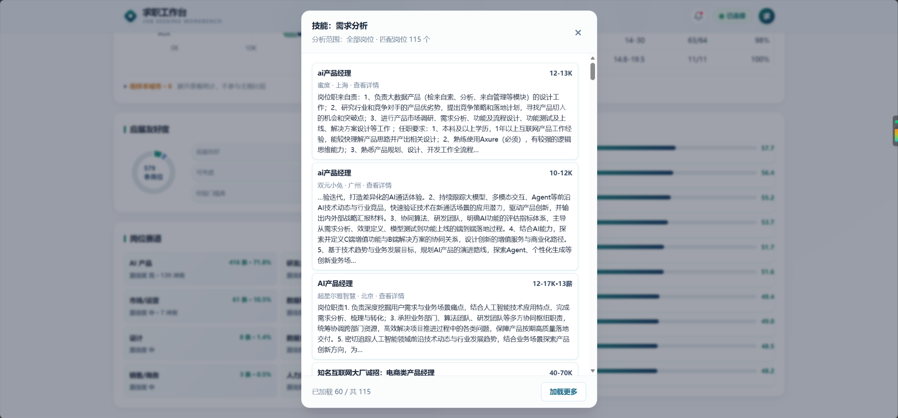
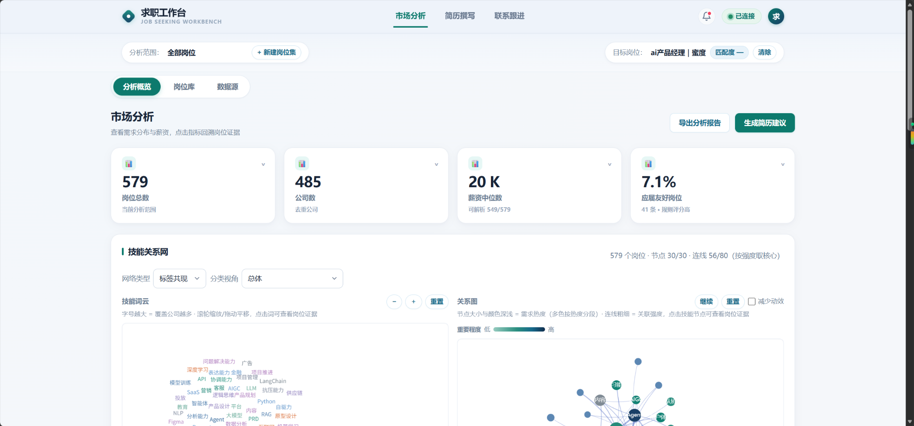
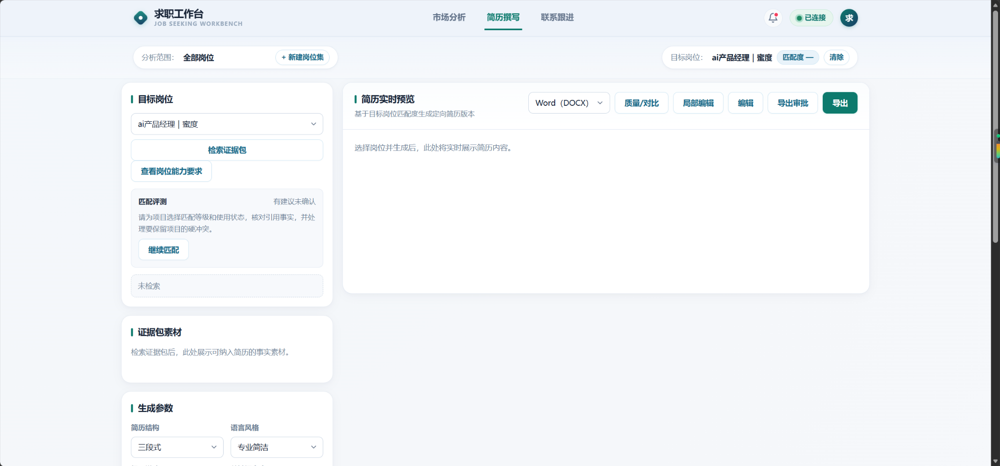
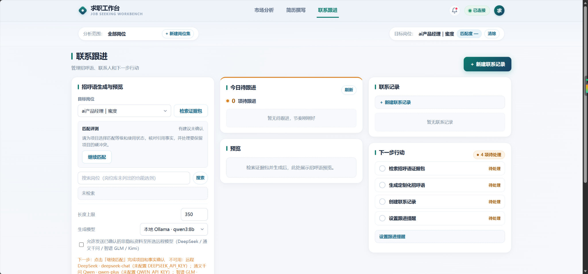

← 返回精选项目
CASE 002 / PROJECT ARCHIVE
求职工作台
把岗位数据、个人经历与 AI 建议放入一条可核查的决策流程。
真实产品界面关键产品决策我的工作与成果

01 / CASE FILE
项目概览
先确认事实，再生成内容。让 AI 参与求职，但不替人做最后的决定。
将岗位研究、材料治理、匹配分析、定向简历和招聘沟通组织成可追溯的工作流程。需求来源于个人实际求职经历，目前是本地自用的个人产品。
02 / CASE FILE
产品决策
01 / 为什么先看岗位，再写简历？
在生成之前先整理岗位需求、技能分布和市场差异，减少目标不清情况下的无效改写。
02 / 为什么让证据可以点回去？
技能关系和标签结论应当能够回查原始岗位材料，避免用户只能相信分析图表。
03 / 为什么坚持人工确认？
职业意向、本人真实经历、JD 要求和生成文本分开管理；用户确认过的事实才能进入输出，材料变化后相关产物应当过期。
03 / CASE FILE
数据与证据关系
通过岗位方向、技能关系与薪资分布，帮助用户比较岗位要求，并从分析结果回到原始招聘内容。

04 / CASE FILE
从生成到跟进
从目标岗位开始查找经历证据，在人工确认后生成定向简历与招呼语，再记录联系进展和下一步行动。


05 / CASE FILE
验证与边界
已实现： 采集、岗位分析、材料治理、匹配、定向简历与招呼语相关代码链路，并完成部分隔离回归。
已设计 10 个岗位 × 12 个项目的匹配评测页面，用于后续人工评判与模型建议对比；人工标注与完整评测仍在推进。
我负责需求拆解、产品流程、事实核对规则及功能验收；模型参与岗位理解与表达改写，最终材料由用户确认。